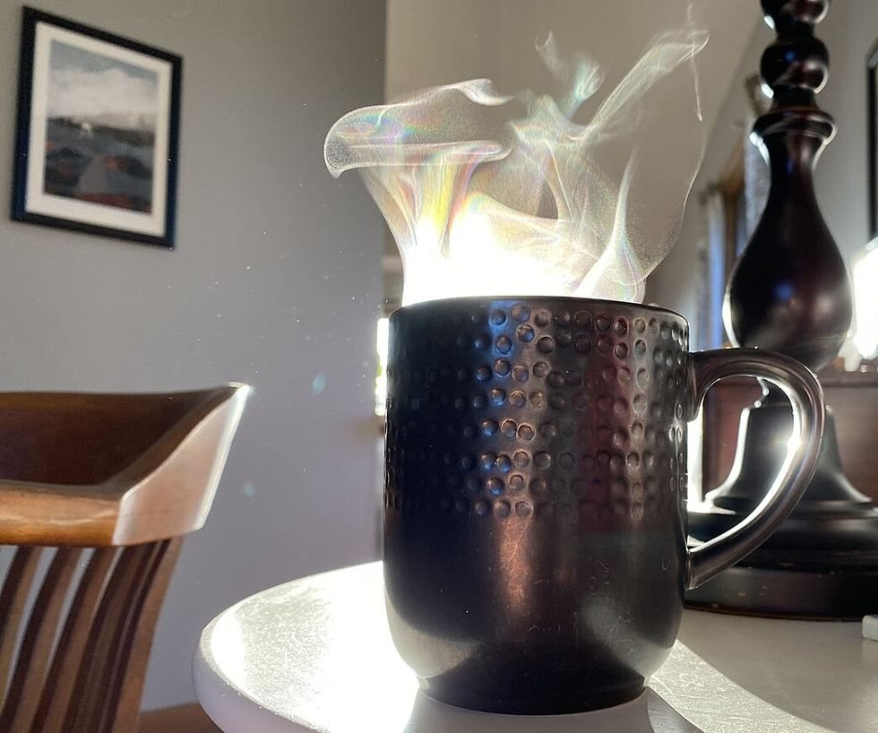
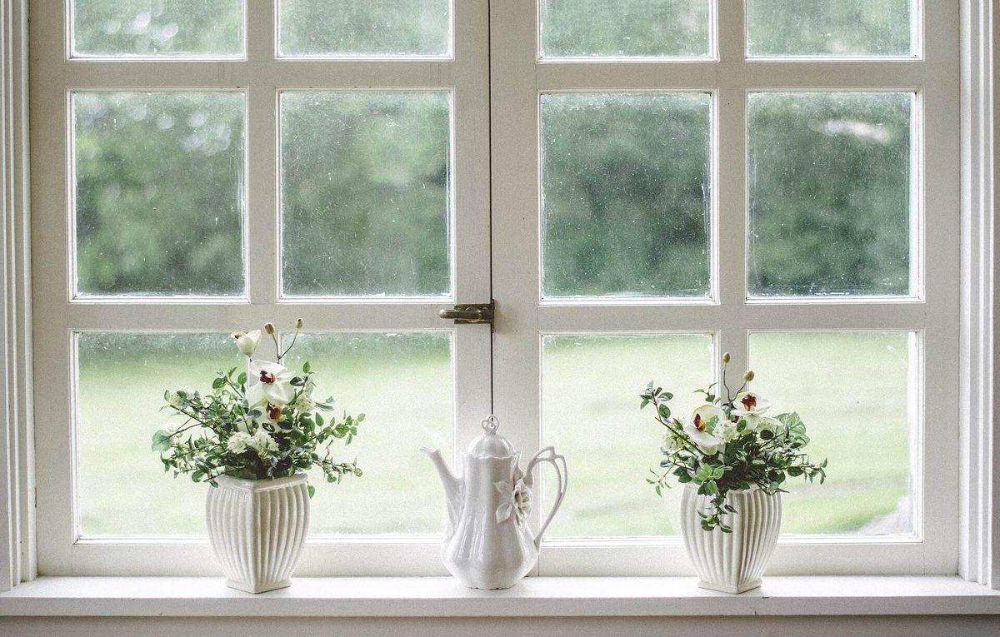

ギャラリー(イメージ)


写真は飲み物やパンのイメージです。お店で提供している商品を示すものではありません。
制作側の連想
電気ケトルの部位の配置図
お湯をわかすための道具、電気ケトルを横から見た図にして、六つの部位に番号を振ってみました。制作側の連想で、お店の理念・由来とは無関係です。部位の名前は一般的な呼び方で、お店とは関係ありません。
- 1注ぎ口お湯を外へ出すための先端部分。
- 2蓋上の開口をふさぐ部分。つまみがつく。
- 3ハンドル持ち上げるときに握る部分。
- 4スイッチ加熱を始める・止めるための操作部。
- 5水量窓中の水位を外から見るための窓と目盛り。
- 6電源ベース本体をのせて電気を届ける台座。
写真(イメージ)
白と黒の背景で。


写真は飲み物やパンのイメージです。お店で提供している商品を示すものではありません。
ご案内
お店のこと(確認できたものだけ)
| 所在地 | 〒410-2416 静岡県伊豆市修善寺769-3 |
|---|---|
| 電話 | 準備中 |
| 営業時間 | 準備中 |
| 定休日 | 準備中 |
| ご予約 | 準備中 |
| 駐車場 | 準備中 |
| SNS | Instagram @sabo_wagahai |